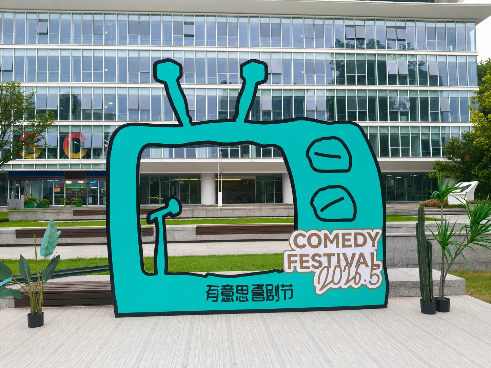
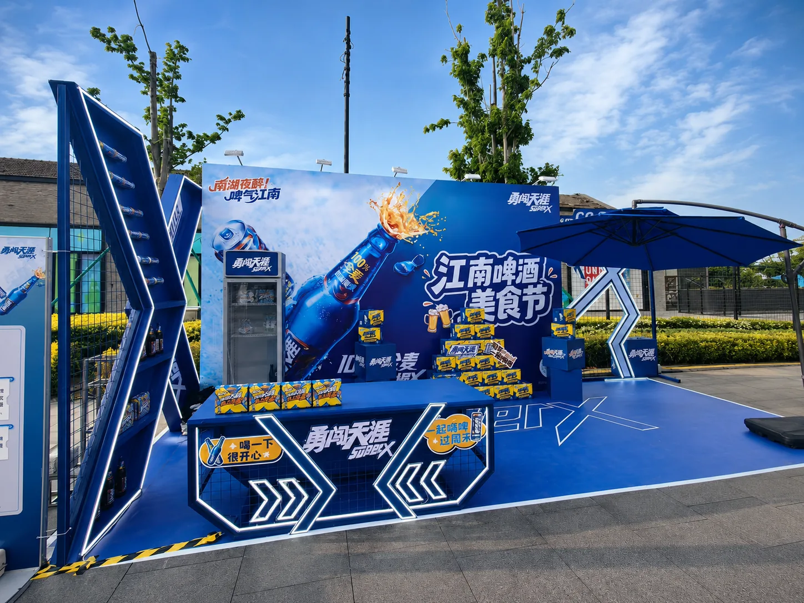
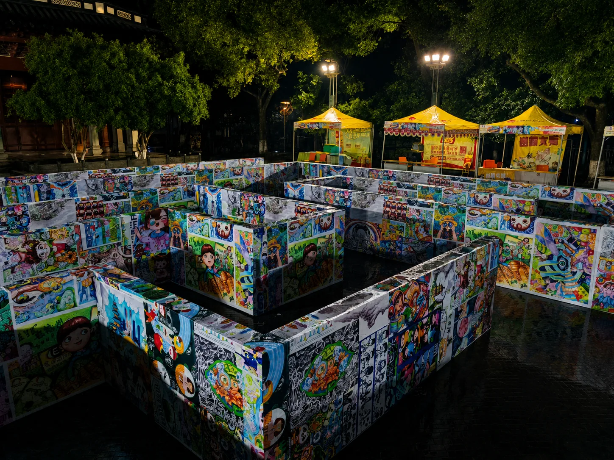
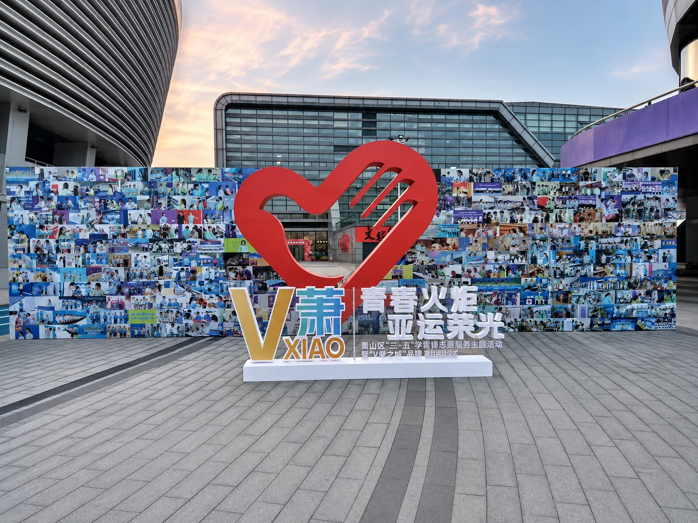

Case · Event Materials
活动场景广告物料案例
项目类型为户外活动与公共场景展示物料，重点是让主视觉、互动装置和现场环境形成统一、清晰且适合拍摄传播的体验。
需求与设计方案
项目需要在开放场地中形成明确的活动入口和传播焦点。方案通过高识别色彩、立体轮廓、主题文字和可进入或可合影的装置组合，让物料既承担导视功能，也成为活动现场的视觉内容。
制作与实施
从现有项目资料可确认，现场包含立体主题装置、画面板和互动展示结构。具体板材、结构尺寸与施工节点未在公开资料中披露，因此不作未经核实的材料声明；实际项目均需结合使用周期、天气、场地和安全要求确定制作方式。




展示图片基于项目实景资料进行亮度、透视和画面整理，用于网页呈现；原始实景资料在内部保留。
项目结果
最终形成了可远距离识别、可近距离互动并适合现场拍摄的广告物料组合。该类方法可用于品牌活动、商业推广、社区活动和主题展陈。